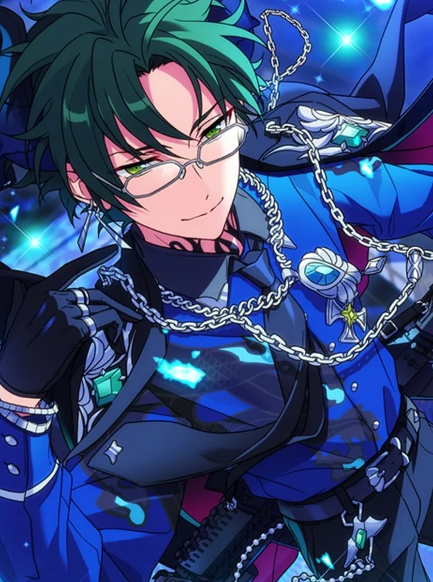
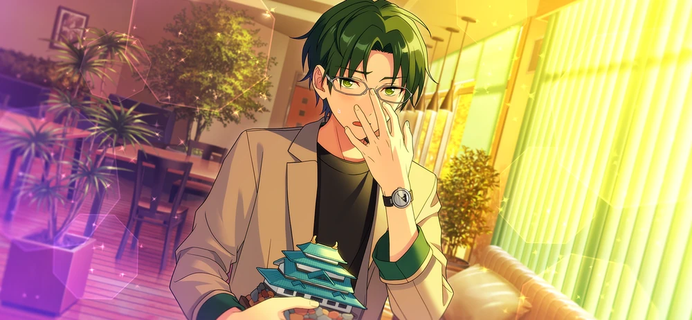
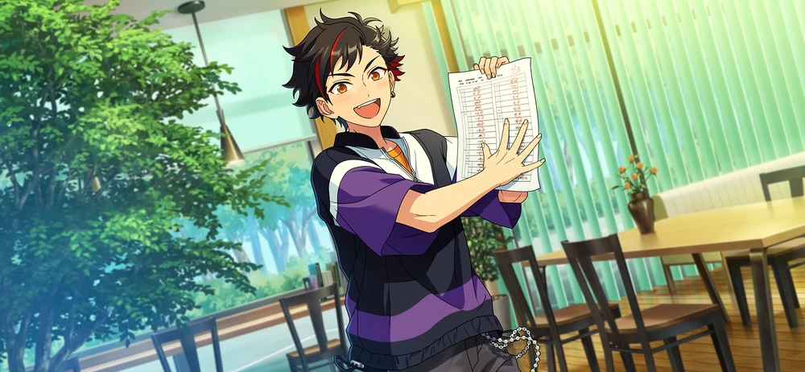
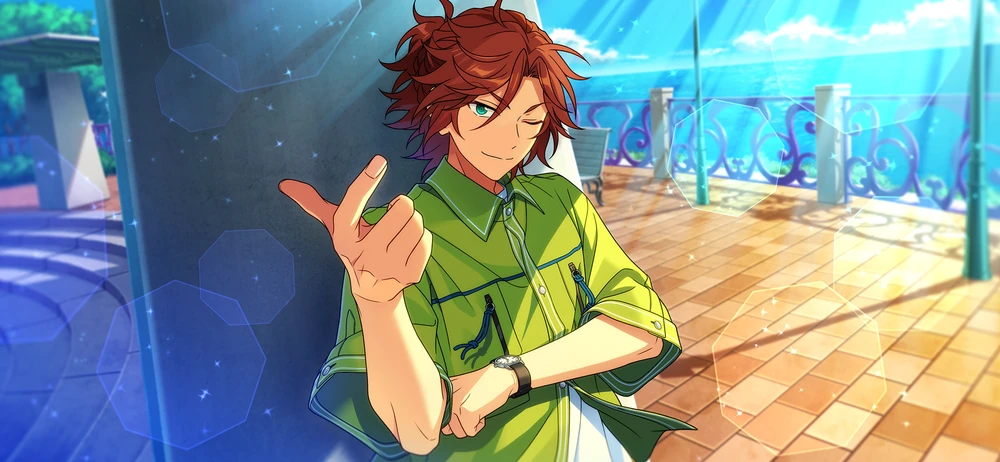
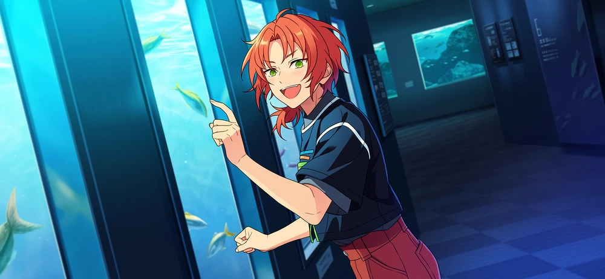

Dominant





Chapter 1

Alright, the food stores are all stocked up again.
(That being said and done, it seems like the amount of stock used up was pretty excessive last month.)
(Most of the food supplies are packed meals and instant noodles. If you eat too much of those, you’ll throw off your nutrition and your body will be worse off.)
(Cooking for yourself is better for a balanced diet, but if you get busy with work and can’t make it home until late, that's difficult to do.)
(And even then, if there’s nothing stocked up at all that you end up skipping a meal, your body will pay for it even more. There’s a lot of tough parts about this.)
Now, what’s next…

I feel like I’ve heard this question in class before…?
U~myu. There’s so many names of battles, I get ‘em mixed up all the time.
Uuu~um, I’m pretty sure the answer to this question was…
Oh, is that you, Nagumo?
Uwaa!? H-Hasumi-senpai! How long have you been standin’ behind me…!
Only just now?
I-Is… that right? I didn’t notice at all ‘til you called out to me. So my training’s not all the way there yet either, huh…?
Do you need to do stuff in the common room?
As you can see, I’m making the rounds to replenish the daily necessities. If tissues and consumable goods like that don’t get refilled, the people who use them will be inconvenienced.
Guess it’s one of your jobs as dorm supervisor? So it was Hasumi-senpai who kept everything refilled and stocked up…
Essentially. When I’m extremely busy, someone else notices and refills everything for me.
Really? I didn’t know that at all.
So the dorm supervisor doesn't just help you find the remote control if it goes missing, or contact maintenance if there's a water leak...
Setting aside contacting maintenance, I’d like for everyone to look for the remote control by themselves at least...
Even so, this means that it's all thanks to Hasumi-senpai we can live here comfortably at Seisoukan!
Thank you for everything!
No need to thank me. As the dorm supervisor, it’s nothing more than an obligation for me to fulfill.
That aside, what are you up to? You seemed locked into whatever it was you were doing… hm?
A textbook… and notes…? It can’t possibly be– are you studying!?
Ahaha… it’s embarassin’, but yeah, that’s right…
Nagumo. Are you running a fever?
? What’s that supposed to mean?
No, sorry. It’s just, I can’t believe there was any possibility that you’d study out of your own volition, Nagumo.
I get why you’d think that, but even I study at least!
Yeah, that appears to be the case indeed. Back when I was a student, I could never imagine you as someone who studied, but… I see. Does this mean you’ve grown up too, Nagumo?
Did you have a change of heart or something? Perhaps because you’re now in the highest year in school, you’ve grown some self-awareness…?
Ah~... I wouldn’t particularly say that, no.
Hm? Really?
At any rate, it’s wonderful that you’re pursuing the path to knowledge like that.
A-Ahaha… Yeah…
That being said, even though it’s only been a year since I graduated, seeing workbooks from those days makes me nostalgic.
Ahh, like this page. Trick questions are mixed in with the typical ones, and they’re unforgiving. They tripped up many, many people.
So it was the same for your class, huh, Hasumi-senpai? Lots of kids in mine got ‘em wrong too.
Well, I didn’t get ‘em at all either~♪
That’s not something you should be smiling about…
Even though it’s a trick question, you should be able to find the answer if you read the question carefully. For instance, if you look at this question...
Hm? Sorry. It seems I dropped a paper that was between the pages of your workbook.
Ah. That’s…!?
Keito, serious This is an exam sheet? … And the grade is…
– Three points?
Ahh~ … Err, is that right…
… What in the world is this grade, Nagumo?
Well, I guess I got caught off guard real hard by the pop quiz at the beginning of the semester.
Until a lil’ while ago, I was busy with Supervillains…1 Since I was out doin’ stuff in Okinawa, I couldn’t really review anythin’ I learned from second year.
Well… Even so, I think saying this grade’s egregious would be an understatement.
Uuu… There’s nothing I can say back.
… To tell you the truth, the only reason I started studyin’ was ‘cause of that quiz.
Students with low grades hafta get retested at a later date...
Hmm. You’re not good at classroom learning, but you’re still studying voluntarily, so I can imagine this means that…
If you take the test and get a bad grade again, you’d be put at somewhat of a disadvantage?
Yeah, that’s right. From that day on, you’ll get given twice as much homework to do for the whole month…
… I was impressed that you were studying on your own for once, but to think there was a reason like that for it…
I admit that it’s just like you, but there goes all that reconsideration I had of you…
(No. Nagumo felt a sense of crisis from these test scores and got motivated because of them.)
(Nagumo would’ve never been able to do that before. His efforts to study should be commended.)
(But… from the looks of things a second ago, can Nagumo really pass the makeup test?)
(While there are many kinds of entrance exams where hard work isn’t rewarded, it’s not like that with normal tests.)
(You just have to solve the questions and then review the parts you got wrong. If you truly deepen your understanding of the material, surely, the results will come in the form of grades.)
Nagumo. When’s the makeup test?
Eh? Er, I think it’s supposed to be next weekend…
… Next weekend? That’s no problem then. My work’s only going to be in the mornings for a while.
Whaddya mean, “no problem”? I can’t keep up with what you’re sayin’ at all…
It's simple. From today until the day of the makeup test, I'll tutor you.
Chapter 2

Umm, so you’re gonna tutor me, Hasumi-senpai?
Yes. While I do think it's a good thing to concentrate on going through the material alone, if there's someone there who can explain the questions you don’t get, you'll understand it sooner.
It's only been about a year since I graduated from Yumenosaki Academy. If it’s content from when I was a student, I should be able to teach it no problem. I've gone over it a few times in Keito Lecture as well.
Ah~ It’d definitely save me big time when we get to questions I dunno, but…
What? I don’t think it’s a bad idea, but… is something troubling you about it?
No, that’s not it!
(That’s not it, but…)
(Last year, when Hasumi-senpai tutored me, he was really ruthless.)2
(To be honest, I could endure it then ‘cuz it was just one day. But if that kinda treatment went on day after day ‘til we get to the day of the next test…)
(... No way, no way! There’s absolutely no way! I just know for sure that I’m not lasting past day two!)
(But when I think about whether I can pass the makeup test on my own… I don’t have high hopes for myself, I just know I wouldn’t manage it.)
… gumo. Nagumo!
*Wah!? *What’s wrong, what made you shout so loud?
I should be the one asking “what’s wrong?”. You seemed like you were brooding over something…
N-No, it’s nothing!
……
… Sorry. It seems I put you on the spot with my suggestion.
Eh? No, I’m not really put on the spot or…
No matter the reason why you started studying on your own, I thought that I could help you study, but it looks like I was being overbearing.
No, that's not it! If anything, it's a really, really appreciated suggestion!
It’s embarrassin’ to admit this, but I don't think I’m gonna be able to pass the makeup test if I keep studyin’ on my own, so...
If it’s okay with you, Hasumi-senpai, I’d like you to tutor me!
Hm, now that you've come to the point that you willingly want to learn on your own, I feel that you’ll be fine even if you don’t rely on me, but…
If that’s what you’re saying, I’ll give it my all too.
Ossu! I’d like you to tutor me without holding back for a single second, Hasumi-senpai!
Trust yourself in my hands. I’ll make sure you get a good grade on that makeup test– no, full marks!
No, umm… I’m not askin’ that much outta you?
It’s settled, we shouldn’t waste any time getting set up. … Just give me a moment.
Huh? What do you mean, get set up? I’ve already got all my stationary and workbooks with me~
– Ah, he’s already outta here. Looks like he went upstairs to get to his dorm.
… I have a really really bad feeling about this.
I might’ve just made a completely hasty decision… maybe…
I’ve kept you waiting.
Ohh… That was real fast.
You’re so motivated, I certainly couldn’t leave you hanging for long.
Now then, let’s start studying at once. Go and sit in your seat.
Hold on a sec, Hasumi-senpai. What’re all these books on the desk for? There’s way too many of ‘em.
…? These are workbooks I brought for you to solve?
No, I get that, but–! Isn’t this a ridiculous amount of books!?
What’re you even plannin’ to do with that mountain of workbooks!? I wouldn’t be able to finish this even if you gave me half a year! Summer vacation homework doesn’t even compare to this…
Settle down. The lesson’s already begun. No talking out of turn.
Nono! If things keep up like this, I’ll have to do a stupid crazy amount of problem sets!? There’s no shot, I don’t wanna do that!
All I want is to avoid getting a failing mark in the makeup test, y’know!!
How can you be so spineless? Studying the bare minimum and leaving it at that is just a temporary fix.
The next time a test rolls around, you’ll just panic again.
You’ve advanced to being a third-year, so now is the time to thoroughly review all that you learned in your second-year.
Okay, sure, you could say that, but…!
Uuu… All I wanted was to avoid getting my homework doubled, but Hasumi-senpai’s workbooks are way, way more extreme, aren’t they?!
(Sigh)… If you’re that insistent, then I'll narrow it down to these three books for today. Now you won't have any complaints, right?
No, that’s still way too much!? I don’t think I could finish even one of these books in a day!
Gahh! “I don’t wanna do this, I don’t wanna do that! ” You’re the one who told me not to hold back and tutor you!
That’s true, but~! I didn’t think things would end up like this, y’know~!?

Hear, hear! Keito’s always way too strict!
Yeah, right?! Tell him!
Keito’s the super stubborn type. If we back down here, we’ll never win for the rest of our lives!
… Why’re you arguing with Keito anyway, Tetora?
We’re not arguing, Tsukinaga.
Wait a sec– Tsukinaga-senpai!? How long have you been here!?

Hahaha! We heard you two talking!
And Mikejima too, huh? Hiding and eavesdropping people’s conversation is in poor taste, you know.
It’s not like that’s what we meant to do. The common room got noisy, sooo it just happened to be in earshot.
Chapter 3

What an explosive situation! I was worried a huge argument was going on, what with all the loud voices and confrontation, buuut…
I’m relieved to know my worries were unfounded.
Sorry. It seems I got a little too riled up.
Me too… I’m really sorry for being rowdy.
Naaah, I’m not bothered. It’s a good thing to be lively.
But they were fighting over something, right? From what I heard, I got the sense Tetora was being forced to study against his will.
It wasn’t against his will. At the end of the day, Nagumo was the one who asked me to tutor him.
That’s true, but I missed the part where he said I had to do tons of books’ worth of questions!
Calm down, Nagumo. You seem to think there’s a lot of questions in this book based on how thick it is...
Look. Every page has an explanation, so there’s not nearly as many questions as there are pages.
It's not a matter of how many questions there are or anythin’ like that. It’s just that you’re underestimating how stupid I am, Hasumi-senpai.
What on earth is giving you the confidence to say that with your chest…
Do you think you can get good scores with that kind of attitude?
As I said a while ago, you’d run into trouble in the future if you neglected your pursuit of knowledge now.
If you can’t study even after you enter society, your troubles won’t stop at routine exams.
You’re blowing things out of proportion, Keito. You don’t need to study to keep up with life.
I barely went to class, and I didn't do much homework either.
But I'm still living a good life like this~♪
So I think you don't have to be so studious.
Don't forget, Tsukinaga, that while you think that, there are people who are tossed around by your carefree attitude.
What’ll you do if Nagumo takes your opinions seriously and stops attending classes?
No, ‘course I wouldn’t skip classes…
I think it’s just like Tsukinaga-senpai to live his life like that, though.
Weeell, there may be people who can be really successful in life without ever needing to study like Leo-san said, but…
Not everybody can. Only a handful of people can turn out the same as Leo-san.
Most people go to school and spend their time taking classes. If even common sense eludes you, you'll have a hard time in society.
A student's duty is their studies. That goes for us idols too.
No, Keito, you’re wrong!
‘Cause the most important thing for students is to enjoy their springtime of youth!
Enjoy their springtime of youth…?
Yeah! Your school days will pass before you know it! That's why you should prioritize the things you can only do while you're a student!
If you wanna study, you can do it after you graduate. Throw out your notes and go out on the town! And have as much fun as you can! Wahahahaha☆
U~myu, I feel like Tsukinaga-senpai has a point, too…
That’s absolutely absurd… is what I’d like to say, but I admit that the time you have as a student is limited.
But absorbing yourself in your studies in the classroom and taking exams are crucial experiences you can only get from school life too.
On that point, I agree with Keito-san.
The best part about being a student is taking classes with everyone.
I was always traveling all over, so I think I might have sooome regrets of not getting the chance to spend time with everyone back then.
Eh~? Just go to class or whatever when you feel like it.
I had way more fun composing than doing that!
Although, even though I say that, I'm not feeling inspired in the slightest right now, so no melodies are coming to me at all...
Yeah. I said that the best part is the time you spend taking classes with everyone else, buuut just because you’re a student doesn’t mean you have to put your whole being into studying.
Of course, knowledge is important, and if you have it, it may be useful somewhere, but...
Devoting yourself to something you enjoy like Leo-san does is another meaningful way to spend your time.
Besides, sometimes random trivia ends up more handy than what you learn at school if we’re talking about knowledge that’s useful in the future. At the end of the day, it juuust depends.
Not studying doesn’t mean you’ll have tons of trouble. I don’t think there’s any need to think too deeply about it, yeah?
If you wanna, how about you join up with us on our outing, Tetora-san? I was actually planning to go for a drive with Leo-san, so…
Enough, Mikejima. Nagumo’s so lost he's at his wit’s end.
U~myu. So I don't need to study after all...?
No, that’s definitely not the conclusion here…
Mikejima and Tsukinaga certainly have a point. I believe that a student's duty is to study, but I'm not saying that you should neglect everything else in favor of *just *that.
We covered a lot of ground, but we should define your goal in why you want to study before anything else.
In Nagumo’s case, his first priority is to get a good score on the makeup test and keep his homework from increasing, am I correct?
Yeah… Exactly.
So if that’s what we’ve decided, then all we have to do is study the test material. Even though I’ve put some problem sets together, there’s no penalty if you can’t get it all done today.
Just fill out as much as you can, Nagumo. There's still plenty of time until the makeup test.
… Ossu. Got it. Like Hasumi-senpai said, we gotta start reviewin’ for the test.
Well, if Tetora’s okay with that, it's okay with me too.
Yeah. Tetora-san’s really motivated, so we shouldn't disturb him any more than we already have. We were just about to head out, right, Leo-san?
Yep. Well then, maybe I'll buy some souvenirs for Tetora~♪
Translation Notes
- ↑ Referencing the story Supervillain.
- ↑ Referencing the story Keito Lecture: Spinoff Edition.